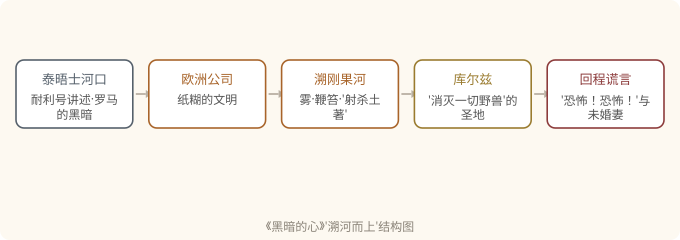

黑暗的心
一、基本信息
| 作者 | 康拉德 |
|---|---|
| 成书/出版 | 1899年《黑树林杂志》连载，1902年结集出版（通说待核） Joseph Conrad — Encyclopaedia Britannica（百科全书） |
| 国别/地区 | 英国 |
| 时代 | 近代 · 19世纪末 |
| 体裁 | 中篇小说（框叙述/象征小说） |
| 语言 | 英语 |

《黑暗的心》'溯河而上'结构图（主题·结构图）
二、创作背景
取材：康拉德1890年的刚果河航行（为比利时贸易公司任船长、目睹象牙贸易与残酷统治——其《刚果日记》与《黑暗的心》为互文，通说待核）。
出版：1899年分三期在 Blackwood's Magazine 连载，1902年收入《青年与黑暗的心》等三故事集（通说待核）。
接受史：从'殖民批判'到阿契贝的种族主义指控（1975年演讲——B106 来源支撑：阿契贝称康拉德为'血腥的种族主义者'类表述，通说待核原文）——本书成为后殖民批评的核心战场（通说）。
三、内容脉络
框架：泰晤士河口'耐利号'轮船上，马洛（Marlow）向四名匿名听众讲述——'这也是世界上黑暗地方之一'（原文意，待核）：伦敦也曾是罗马人的'黑暗'。
深入：受雇于'欧洲大陆公司'任蒸汽船长，沿刚果河深入内陆寻找象牙代理人库尔兹——沿途见殖民公司的'文明'假面：'用纸糊的'（原文意，待核）——'处理尸体'的表述与'射杀土著'的'进步'。
库尔兹：天才与怪物——'所有欧洲都贡献了这个人'（原文意，待核）；'消灭一切野兽！'（Exterminate all the brutes!——原文，公有领域）的自注；向黑暗'说话'的哲学与象牙的贪婪；'他饿着，黑暗深入他的心里'（原文意，待核）。
结局：库尔兹病死，临终呼喊'恐怖！恐怖！'（The horror! The horror!——原文，公有领域）；马洛向其未婚妻撒谎，说出库尔兹最后的词是她的名字——'我无法告诉她那是什么，那实在说不出'（结尾原文意，待核）。
四、主要人物表
| 人物 | 身份 | 说明 |
|---|---|---|
| 马洛（Charlie Marlow） | 船长·讲述者 | ' skeletally 诚实的观察者'——康拉德的分身（通说） |
| 库尔兹（Kurtz） | 象牙代理人·'天才' | '文明人堕落为神王'——欧洲'启蒙'的黑暗极点（通说） |
| 经理与'朝圣者' | 公司雇员 | '纸糊的'文明（通说） |
| 库尔兹的未婚妻 | 欧洲的'聆听者' | 马洛最后谎言的接受者——'光'与'暗'的讽刺（通说） |
五、主题与艺术特点
- 文明与野蛮的互渗：'黑暗'在欧洲与非洲之间流动——'文明'的假面（通说）。
- 语言与沉默：'恐怖！恐怖！'的不可言说——叙述的极限（通说）。
- 殖民批判与批判的局限：非洲'无声者'（非洲人无名字无语言——通说）——阿契贝的批评（B106）。
- 艺术特点：框叙述、象征（河、雾、黑暗）、语言的'印象主义'（通说）。
六、影响与评论
- Britannica（Conrad 条）：Heart of Darkness (1902) 列于 famous works。
Joseph Conrad — Encyclopaedia Britannica（百科全书） - 电影：科波拉《现代启示录》（Apocalypse Now, 1979）直接改编为越南战争背景（通说待核）。
Joseph Conrad — Encyclopaedia Britannica（百科全书） - 后殖民批评的靶心与起点：阿契贝演讲（通说待核）与萨义德讨论（通说待核）。
Chinua Achebe — Encyclopaedia Britannica（百科全书） - 中译：黄雨石译《黑暗的心》（人民文学出版社，通说待核）与胡南平译本。
Joseph Conrad — Encyclopaedia Britannica（百科全书）
七、阅读建议
难点
- 框叙述+印象主义文体——不追求'情节'，追求'光与暗'的意象。
- '文明/野蛮'的双重反转——注意马洛在'黑暗'面前的失败（对未婚妻说谎）。
- 对照阿契贝批评与《藻海无边》式重写。
- 黄雨石译《黑暗的心》（人民文学出版社，通说待核）：通行本。
- 智量译本（通说待核）：另一选择。
- 英文本：Norton Critical Edition（含 Achebe 批评与历史文献——通说待核）。
通读三部分 → 精读'库尔兹自述'与结尾谎言 → 对照《现代启示录》与阿契贝演讲 → 讨论'马洛的沉默'。
八、待核实
- 连载（1899年2—4月 Blackwood's Magazine 三期，通称）与1902年 Blackwood & Sons 合集待核。
- 刚果日记（Congo Diary）出版信息待核。
- 黄雨石译本出版信息待核。
- 'The horror! The horror!'逐字核对。
本页主要来源
康拉德的其他收录作品：黑暗的心